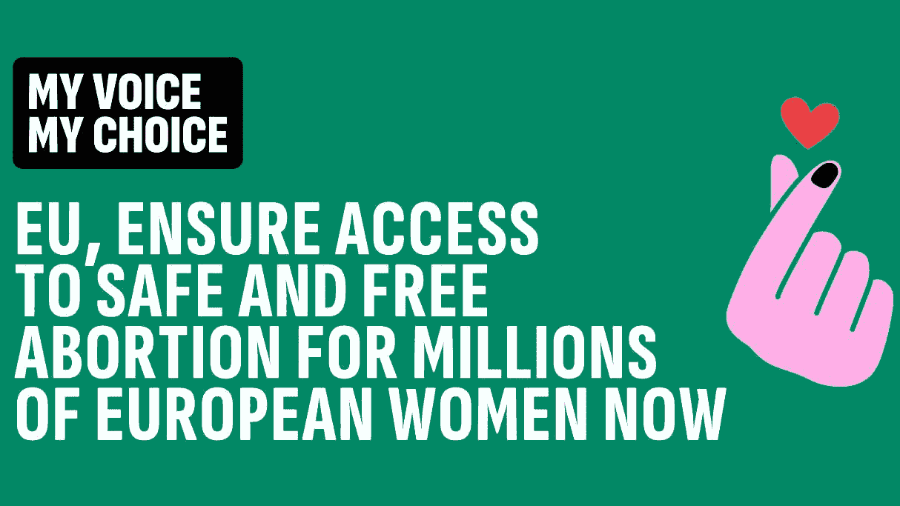

 Promotional image of the campaign - by My Voice My Choice, fair use
Guaranteeing free and safe access to abortion in all EU member states, while providing economic support to women in need, is the goal of the “My Voice My Choice” campaign. On the occasion of the International Safe Abortion Day, the initiative has gained unprecedented support both in Italy and across Europe.
Promoted by over 200 organizations, the campaign has become the fastest petition to European institutions in history. Just in Italy, on September 28, 27,100 signatures were collected in three days, reaching the minimum threshold needed, as in another 10 European countries participating in the initiative.
This data shows that Law 194 does not meet the needs of the Italian population and foreign residents: an outdated regulation characterized by obstacles and limitations, such as the right to conscientious objection, which must be overcome to ensure that all women receive the necessary medical assistance for abortion and access to contraceptives.
Conscientious objection represents one of the major issues related to the implementation of Law 194 in Italy, limiting access to voluntary termination of pregnancy services. Many healthcare professionals refuse to perform abortions for ethical or religious reasons, creating severe hardships for women seeking assistance.
This phenomenon highlights a geographical disparity in access to services and raises questions about the right to health and the implementation of current regulations. The growing mobilization and the signatures collected demonstrate a collective demand for reform, emphasizing the urgency of rethinking the law to guarantee women’s rights and unobstructed access to adequate care.
In a context where women’s rights are at the center of public debate, it is clear that abortions cannot be banned, only unsafe ones. As stated by the World Health Organization, “abortion is a public health issue and must be treated as such. Abortions must be accessible, safe, and legal” (WHO, 2021). Restrictions push women toward dangerous practices, increasing risks to their health.
The “My Voice My Choice” campaign aims to guarantee access to legal and safe abortion services for all women, regardless of their economic situation or the region in which they live. The European Union has the opportunity to promote regulations that make abortion accessible and free from stigma.
It is essential to address the issue of conscientious objection, which should not hinder access to services. Although Law 194 in Italy represented a step forward, its insufficiency is evident. Data shows that in many regions, over 70% of objectors create service gaps, violating women’s rights to health.
Many countries are reforming their abortion laws to ensure not only the right to choose but also safe access to such services. The growing support for initiatives like “My Voice My Choice” demonstrates the desire for change among women. Health, dignity, and the right to choose must be at the center of public policies, so that no woman is forced to seek clandestine (and often dangerous) help or to give up her right to health.
The fight for access to safe abortion is a civil rights battle that requires collective commitment. It is time to review regulations and take concrete action to guarantee all women the right to a conscious and safe choice, without compromising their health or lives.
Sign the petition here: https://eci.ec.europa.eu/044/public